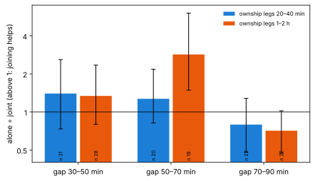
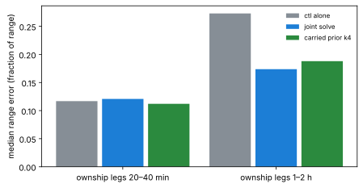
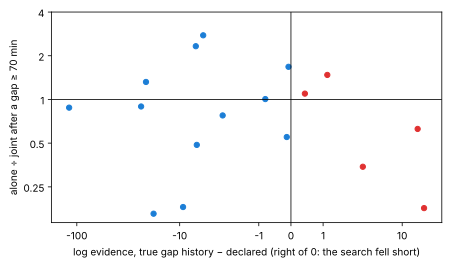

Several periods of one target across long gaps
2026-11-21 · spec 033 · gitma2 · development study, spent seed · nothing trained
The question
- With gaps of 5–30 min, one solve through the gaps beat each period alone (spec 025: 3.10 on Annex B)
- Here: 6-hour engagements from the long simulator, 2–4 periods of 15–30 min, gaps of 30–90 min
- Two runs on the same targets and layouts: the ownship turning every 20–40 min, or holding course 1–2 h
- Compared:
ctl alone, the joint solve, and the carried prior k4 (spec 030)
Joining helps up to about an hour, then reverses

Holding course: 1.34, 2.85 [1.49, 6.05], 0.71 [0.47, 1.02]. Turning: 1.40, 1.27, 0.80. The two runs share targets and gaps, so the reversal is one observation seen twice; no band but one is separated.
Holding course doubles everyone's error

Periods without their own ownship turn are poorly determined whatever the method; joining recovers part. k4 is level with alone in both runs (0.94, 1.05): after an hour its uncertainty says almost nothing.
Why: the evidence prefers a simpler gap history

Of 21 engagements with a gap ≥ 70 min, the declared history has at least the truth's evidence in 15 (123 manoeuvres declared against 178 true); the search falls short in 6. Joining loses either way on average (0.80, 0.57).
Not achieved
- No registered result: one spent seed, 40 engagements, about 20–30 periods per gap band
- The two runs are not independent; the "about an hour" threshold is a reading of three bands
- No joint solve that breaks at long gaps was built; the long simulator's ownship steers on the true target
What follows
- Practice suggested: join across gaps up to about an hour, solve each period alone beyond
- The time-late gap track closes here unless reopened (owner's choice)
Write-up: /blog/2026/11/21/long-gaps · Records: experiments/20261120-tl12-dev, -tl12-hold-dev · Figures: scripts/research/tl12_charts.py